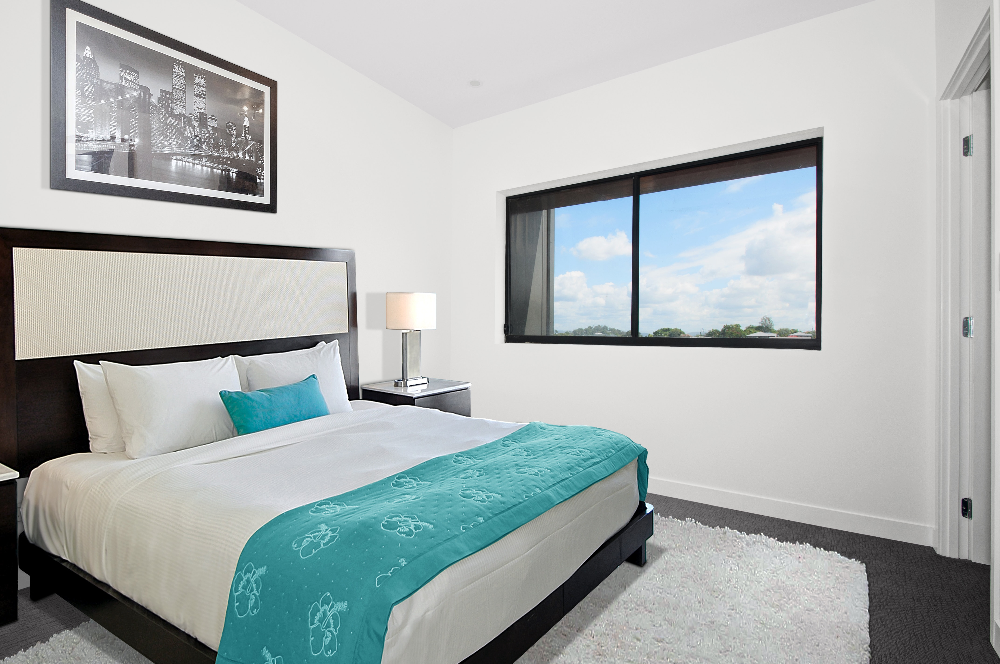
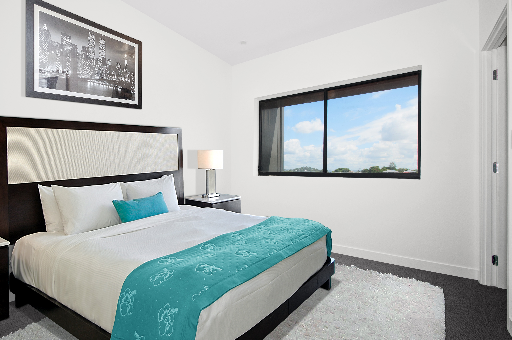

Interior Designing
About Me
Hello my name is Titilayo, Titi for short. I am 13 years old and I am a Nigerian-American. Me my mom and my sister moved from Africa to America 7 years ago so we could live with our Dad. When i first came here I did not know anyone because I had just moved. When I arrived at my new school becasue I wasn't really fluent in english but I learned and I became better. It was awkward at first but I made knew friends and I became more and more confortable.
Origin Story
My room was just begging to be cleaned and as I was cleaning my room I began to get ideas on how to organize my room. At first, I began with my clothes and my closet then I started to design with washi tape. Washi tape is a pretty, decorative paper masking tape. It has different colors and different decorating patterns. The tape is easy to stick on any surfaces including wood, plastic, and metal and it is easy to remove without causing any damage. It makes things easier so I won’t have fear of ruining the wall. I used the Washi Tape to spell out my name and it turned out better than I had expected. On that day I decided to start doing more decorating things. So I redecorated my sisters room , I spelled her name out just like I did with mine and i did other things like moving things around and I hung some more things and it looked it great.
Future Plans
As I continue to grow I hope to become very successful in designing. I want to have a huge company, not for money but to show people what I can really do. First I want to graduate highschool with a scholarship so that I won't owe debt. I want to have an athlethic scholarship becasue I happen to very good at running. I did Cross-Country for about a year until I decided to stop because I was moving and going to a school that was closer to my house. I want to study being a buisness manager and a doctor. I want to become a doctor first so that I can work for a long time and then save up and build a company. I want to do it this way to make sure I don't go bankrupt. I don't want to start a major buisness and owe lots of money. I would like to go to Ohio State University to study.It seems like a great college I plan to spend at least 6 years or more because I want to learn as much as possible so I can be fluent in what i'm doing.
 
